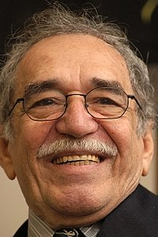

Моя улюблена книга
Бірюков Іван Федорович

Автор : Габрієль Гарсія Маркес
Жанр : Роман
Рік першого видання : 1967
Моя улюблена книга
Майже всі події роману відбуваються у вигаданому містечку Макондо, але мають стосунок до історичних подій в Колумбії. Місто заснував Хосе Аркадіо Буендіа, вольовий та імпульсивний лідер. Його глибоко цікавлять таємниці Всесвіту, які йому періодично відкривали заїжджі цигани на чолі з Мелькіадесом. Місто поступово зростає, і уряд країни виявляє інтерес до Макондо, але Хосе Аркадіо Буендіа залишає керівництво містом за собою, переманивши надісланого алькальда (мера) на свою сторону.
Про автора
 Габріє́ль Хосе́ де ла Конкордія Гарсі́я Ма́ркес( 6 березня 1927 - 17 квітня 2014 )
Колумбійський письменник-прозаїк, журналіст, видавець і політичний діяч; лауреат Нейштадтської літературної премії 1972 року, лауреат Нобелівської премії з літератури 1982 року. Представник літературного напрямку «магічного реалізму». Його ім'я стоїть поряд з іменами Хорхе Луїса Борхеса, Маріо Варгаса Льйоси, Хуліо Кортасара як одного з найвизначніших письменників Латинської Америки ХХ століття
Зміст
| Розділ 1 | |
| Розділ 2 |
Розділ 1
Колись, через багато років, полковник Ауреліано Буендіа, стоячи біля стіни перед загоном, що мав розстріляти його, згадає той давній вечір, коли батько взяв його з собою подивитися на лід. Макондо було тоді ще невеличким селом на якісь два десятки ліплянок із глини та бамбука на березі річки, що стрімко несла свої чисті води ложем з відполірованих каменюк, білих та здоровенних, мов доісторичні яйця. Світ був іще такий незвіданий, що багатьом речам бракувало назв і на них доводилося просто вказувати пальцем. Щороку в березні край села напинало свої халабуди обірване циганське плем'я і під пронизливі звуки свищиків та гуркіт бубонів оповіщало всіх про нові наукові відкриття. Першого разу вони принесли з собою магніт. Огрядний циган з дикою бородою і тонкими, скарлюченими, мов пташині лапки, пальцями, котрий назвався Мелькіадесом, приголомшив усіх, показавши оте, як він сам сказав, восьме чудо світу, створене вченими алхіміками Македонії. Він ходив від хатини до хатини, тримаючи в руках два металеві бруски, і люди, переймаючись жахом, бачили, як казанки, тази, обценьки та жаровні підхоплювалися зі своїх місць, а цвяхи й шурупи відчайдушно силкувалися видертись із дощок, які аж тріщали від їхніх зусиль. Загублені хтозна-коли речі з'являлися раптом саме там, де їх доти найбільше шукали, і безладним гуртом волоклися за чарівними брусками Мелькіадеса. "Речі теж по-своєму живі, — з різким акцентом проголошував циган, — треба тільки вміти розбудити їхню душу". Хосе Аркадіо Буендіа, чия буйна уява сягала не тільки далі спроможностей творчого генія природи, а й ген за межі чудес і чарів, подумав собі, що це досі пусте наукове відкриття можна використати для добування золота із земних надр. Мелькіадес, чесна людина, застеріг його: "Для цього магніт не годиться". Але Хосе Аркадіо Буендіа тоді ще не вірив у чесність циган, тож віддав за магнітні бруски мула й кількох козенят. Урсула Іґуаран, його дружина, яка розраховувала на цю худібку, щоб хоч трохи підняти занепалий добробут родини, марно намагалася відрадити його. "Невдовзі у нас буде стільки золота — хоч підлогу мости", — відповідав їй чоловік. Кілька місяців він уперто намагався справдити свою обіцянку. П'ядь за п'яддю обстежував усі околиці, ба навіть річкове дно, носячи з собою оті два залізні бруски й знай голосно вигукуючи закляття, що його навчив Мелькіадес. Однак єдине, що йому поталанило видобути з-під землі, — це геть укритий іржею обладунок п'ятнадцятого сторіччя, який при ударі гучно відлунював ізсередини, мов великий сухий гарбуз, наповнений камінцями. Коли Хосе Аркадіо Буендіа та четверо односельців, що супроводили його в цій експедиції, врешті розібрали обладунок, то знайшли всередині скам'янілий кістяк, а в нього на шиї — мідний медальйон з пасмом жіночого волосся.
У березні цигани прийшли знову. Цього разу вони принесли з собою підзорну трубу, а також лінзу з добрий бубон завбільшки й оголосили, що це останні винаходи амстердамських євреїв. Трубу вони поставили перед шатром, а в найдальшому кінці вулиці посадовили циганку. За п'ять реалів можна було заглянути в трубу й побачити циганку ніби на досяг руки. "Наука знищила відстані, — проголошував Мелькіадес. — Незабаром, не виходячи з дому, можна буде бачити все, що діється будь-де в світі". А потім якось у обідню пору цигани показали незвичайне видовище з допомогою велетенської лінзи: поклали посеред вулиці оберемок сухої трави й, навівши на неї лінзою сонячні промені, підпалили. Хосе Аркадіо Буендіа, який іще не заспокоївся гаразд після невдачі з магнітами, миттю загорівся ідеєю застосувати цей винахід як бойову зброю. Мелькіадес і цього разу намагався відраяти його. Однак зрештою погодився обміняти лінзу на два магнітні бруски та ще три золоті монети. Урсула гірко плакала. Адже ці гроші було взято зі скриньки з старовинними дублонами, що їх Урсулин батько назбирав за все своє життя у злиднях, — вона тримала золото під ліжком, дожидаючи нагоди вкласти у справді прибуткове діло. Хосе Аркадіо Буендіа і не думав її втішати — він поринув з головою в свої випробування нової зброї й провадив досліди з самозреченням справжнього вченого, ба навіть ризикуючи власним життям. Намагаючись довести, що лінзу можна успішно застосувати проти ворожого війська, він підставив під сфокусований пучок сонячних променів своє тіло й дістав опіки, які перетворились на виразки й довго не гоїлися. Він уже був би підпалив і власний будинок, якби проти цього рішуче; не виступила дружина, вкрай налякана таким небезпечним наміром. Чимало годин провів у своїй кімнаті Хосе Аркадіо Буендіа, обмірковуючи стратегічні можливості найновішої зброї, і навіть написав посібник щодо її застосування — з гідною подиву ясністю викладу й непереборною силою аргументації. Цей посібник разом із доданими до нього численними описами проведених дослідів і кількома аркушами пояснювальних креслень було надіслано властям через гінця, який перейшов гірський хребет, блукав серед непрохідних боліт, плив бурхливими річками, зазнавав постійної небезпеки бути розірваним дикими звірами, померти від туги чи загинути від чуми, аж поки добувся до поштового тракту. Хоча дістатися до столиці за тих часів було майже неможливо, Хосе Аркадіо Буендіа обіцяв вирушити в дорогу на перший виклик властей, щоб показати воєначальникам наочно, як діє його винахід, ба навіть особисто навчити їх складного мистецтва сонячної війни. Кілька років він чекав відповіді. Врешті, стомившись від чекання, поскаржився Мелькіадесові на нову невдачу, і тоді циган у найпереконливіший спосіб довів йому свою чесність: забрав лінзу, повернув дублони та ще й подарував кілька португальських мореплавних карт і різні навігаційні прилади. Мелькіадес власноруч написав стислий виклад праць ченця Германа і залишив його Хосе Аркадіо Буендіа, щоб той навчився послуговуватись астролябією, бусоллю й секстантом. Довгі місяці дощової пори Хосе Аркадіо Буендіа просидів, зачинившись у маленькій кімнатці, що її він сам обладнав у глибині будинку й де ніхто не заважав його дослідам. Геть занедбавши свої домашні обов'язки, він цілісінькі ночі проводив на подвір'ї, спостерігаючи за рухом зірок, а якогось дня мало не зазнав сонячного удару, намагаючись знайти точний спосіб, як визначати зеніт. Коли він навчився досконало послуговуватися приладами, то склав собі таке точне уявлення про простір, що міг тепер плавати незнайомими морями, навідуватись на незаселені землі й зав'язувати взаємини з дивовижними істотами, не виходячи зі свого кабінету. Саме тоді він набув звички розмовляти сам із собою, гуляючи оселею й не звертаючи ні на кого уваги, тимчасом як Урсула й діти гнули спини в полі, пораючись коло бананів і маланґи, маніоку і ямсу, ауйями й баклажанів. Та невдовзі його бурхлива діяльність зненацька урвалась і її заступив якийсь чудний стан. Кілька днів він був ніби зачарований, знай щось стиха бурмотів, роблячи дивні здогади, й аж сам собі не йняв віри, що до такого додумався. І врешті, одного грудневого дня, у вівторок, за обідом, нараз відкинув усі свої болючі сумніви. До кінця своїх днів пам'ятатимуть діти, з яким урочистим, ба навіть величним виглядом їхній батько сів на чільне місце за столом і, тремтячи, немов від пропасниці, змучений довгим неспанням та збудженою уявою, оголосив їм своє відкриття:
Земля кругла, як помаранча. Урсулі ввірвався терпець.Якщо ти маєш от-от здуріти, то дурій сам, — закричала вона. — Але не смій забивати дітям голови циганськими вигадками.Хосе Аркадіо Буендіа зостався незворушним і не дав себе залякати, коли дружина, знавіснівши в нападі гніву, брязнула об підлогу астролябією. Він змайстрував собі нову, зібрав у своїй кімнатці всіх чоловіків села і довів їм, посилаючись на теорії, яких ніхто з присутніх так і не второпав, що коли плисти на схід, то врешті повернешся до місця, з якого виплив. Всі односельці не мали жодного сумніву, що Хосе Аркадіо Буендіа схибнувся, та ось з'явився Мелькіадес і все поставив на свої місця. Він привселюдно уславив розум цього чоловіка, котрий шляхом самих тільки астрономічних спостережень дійшов теоретичного висновку, давно підтвердженого практикою, хоча ще й не відомого жителям Макондо, і на знак свого захоплення зробив Хосе Аркадіо Буендіа подарунок, якому випало справити вирішальний вплив на подальшу долю села: це було устаткування для астрономічної лабораторії.На той час Мелькіадес напрочуд швидко постарів. Коли він уперше з'явився в селі, то видавався ровесником ХосАркадіо Буендіа. Однак той усе ще зберігав свою незвичайну силу, — йому було за іграшки звалити коня, вхопивши його за вуха, — тимчасом як цигана неначе роз'їдала зсередини якась чіпка недуга. Насправді то був наслідок багатьох і до того ж рідкісних хвороб, які він часто підхоплював, безперестану блукаючи по світу. Як він сам розповів Хосе Аркадіо Буендіа, допомагаючи тому обладнувати лабораторію, смерть усюди ходить за ним, наступаючи йому на п'яти, однак усе ще не наважується доконати його. Він спромігся вирятуватись із усіх лих і катастроф, які терзали людство. Зостався живий, перехворівши пелаґрою в Персії, цингою на Малайському архіпелазі, проказою в Олександрії, бері-бері в Японії, бубонною чумою на Мадагаскарі, пережив землетрус на Сицилії та корабельну аварію в Маґеллановій протоці, де загинуло безліч людей. Цей дивовижний індивід, який запевняв, ніби йому відомі таємниці Нострадамуса[1], був похмурим на вигляд чоловіком, оповитим невеселою славою, чиї азіатські очі ніби бачили зворотний бік усіх речей. Він носив велике чорне сомбреро, з широкими, мов розгорнені воронові крила, крисами, і оксамитовий жилет, укритий патиною віковічної плісняви. Та, попри всю свою неосяжну мудрість і ореол таємничості, Мелькіадес був створений з людської плоті, вага якої тримала його при землі, у вічному полоні великих і малих прикрощів та клопотів повсякденного життя. Він скаржився на старечі немочі, страждав через дрібні грошові напасті і вже віддавна перестав сміятися, бо від цинги в нього повипадали всі зуби. Хосе Аркадіо Буендіа вважав, що саме в той задушливий полудень, коли Мелькіадес розкрив йому свої таємниці, і народилась їхня велика дружба.
Розділ 2
Дітей вразили фантастичні розповіді цигана. Ауреліано, котрому було тоді щонайбільше п'ять років, на все життя запам'ятає, як той сидів перед ними, чітко вирізняючись на тлі сліпучого прямокутника вікна; його низький, подібний до органних звуків голос ніби осявав найтемніші закутки уяви, а його скронями спливав піт, мов розтоплений спекою жир. Хосе ркадіо, старший брат Ауреліано, розповість про цей чудовий образ усім своїм нащадкам. На Урсулу, навпаки, відвідини цигана справили найгірше враження: вона зайшла до кімнати саме тієї миті, коли Мелькіадес ненароком розбив слоїк із сулемою.Це запах диявола, — мовила вона.Та що ви, — заперечив Мелькіадес. — Адже відомо, що від диявола тхне сіркою, а тут тільки трошки сулеми.І таким самим повчальним тоном він прочитав цілу наукову лекцію про диявольські властивості цинобри. Та Урсула не схотіла слухати і повела дітей молитися. Віднині цей їдкий запах назавжди буде пов'язаний в її спогадах з Мелькіадесом.Примітивна лабораторія складалась, — якщо не рахувати численних каструль, лійок, реторт, фільтрів і сит, — із звичайного горна, скляної колби з довгою тонкою шийкою — подоби філософського яйця, та дистилятора, спорудженого самими циганами за новітніми описами перегонного куба з трьома відводами, яким послуговувалась Юдейська Марія[2]. Крім усіх цих речей, Мелькіадес іще дав Хосе Аркадіо Буендіа зразки семи металів, які відповідали семи планетам, формули Мойсея й Зосими для подвоєння кількості золота, а також нотатки й креслення з царини великого маґістерію, за допомогою яких той, хто зуміє витлумачити їх, зможе виготовити філософський камінь. Спокушений простотою формул подвоєння золота, Хосе Аркадіо Буендіа кілька тижнів улещував Урсулу, щоб вона дозволила йому взяти ще трохи старовинних монет із скриньки й збільшити їх у стільки разів, на скільки частин удасться розділити ртуть. Урсула, як завжди, поступилася перед несхитною наполегливістю чоловіка. Хосе Аркадіо Буендіа вкинув тридцять дублонів у каструлю і розтопив їх разом з аурипігментом, мідними стружками, ртуттю й свинцем. Потому вилив цю суміш у казанок із рициновою олією і кип'ятив на сильному вогні доти, доки утворився густий смердючий сироп, більше схожий на звичайнісіньку патоку, аніж на подвоєне золото. Після відчайдушних і ризикованих спроб дистиляції, переплавлення з сімома планетарними металами, обробки герметичною ртуттю й купоросом, повторного кип'ятіння в свинячому смальці — оскільки не було редькової олії — від коштовної Урсулиної спадщини зосталися самі тільки горілі вишкварки, що їх було годі відшкребти від дна казанка.Коли цигани вернулись, Урсула вже підбила проти них усе село. Та цікавість здолала страх — цього разу цигани пройшли вулицею під оглушливий шум найрозмаїтіших музичних інструментів, а їхній оповісник оголошував, що буде показано найвизначніше відкриття назіанзців1.1 люди посунули до циганського шатра, де, заплативши по одному сентаво за вхід, побачили Мелькіадеса, але вже помолоділого, здорового, без зморщок, з новими блискучими зубами. Ті, що запам'ятали його беззубі, понівечені цингою ясна, запалі щоки та поморщені губи, вжахнулися, вздрівши незаперечний доказ надприродної могутності цигана. Жах перейшов у паніку, коли Мелькіадес вийняв із рота цілісінькі здорові зуби разом з яснами і, на якусь коротку мить знов перетворившись у всіма раніше знаного старезного діда, показав їх глядачам, а тоді вставив назад і всміхнувся — в повному розквіті своєї відновленої молодості. Навіть сам Хосе Аркадіо Буендіа спершу був подумав, що Мелькіадес переступив визначену людині межу пізнання, але коли циган віч-навіч пояснив йому, як зроблено вставні зуби, то Буендіа відчув велику полегкість і посміявся від усієї душі. Ця річ видалась йому такою простою й такою незвичайною водночас, що вже назавтра він геть утратив будь-який інтерес до своїх дослідів з алхімії, засмутився, став невчасно їсти й з ранку до вечора тинявся без діла по господі. "В світі відбуваються неймовірні речі, — скаржився він Урсулі. — Зовсім поряд, по той бік річки, є безліч найрізноманітніших чарівних пристроїв, а ми тут і далі животіємо, як останні невігласи". Ті, хто знав його з часів заснування Макондо, дивувались, як він змінився під впливом Мелькіадеса.На початку Хосе Аркадіо Буендіа, мов той молодий патріарх, давав поради, як сіяти, виховувати дітей, вирощувати худобу й допомагав кожному, не цураючись фізичної праці, аби тільки гарно йшли справи в громаді. А що тоді господа Буендіа була найкраща в селі, то й інші намагались устаткувати свої на її образ і подобу.
Будинок мав велику світлу кімнату, їдальню у вигляді тераси, прикрашену вазонами з яскравими квітами, дві спальні, в патіо красувався велетенський каштан, поряд розкинулося старанно оброблене поле, стояла обора для худоби, де в мирі й злагоді жили кози, свині та кури. І лише бойових півнів не тримали ні в цьому господарстві, ні в усьому селі.Урсула була до пари своєму роботящому чоловікові. Ця діяльна, розважлива дрібненька жіночка з міцними нервами, яка навряд чи бодай раз заспівала за все своє життя, здавалося, була з раннього рання й до пізньої ночі відразу в усіх місцях, всюди супроводжувана легким шурхотом своїх накрохмалених спідниць із голландського полотна. Завдяки Урсулі долівка, небілені глиняні стіни та незграбні саморобні меблі завжди були охайні, а від старих скринь, де зберігалась одежа, линув слабкий запах альбааки.Хосе Аркадіо Буендіа, найбільш тямущий чоловік у цьому селі, порадив розташувати будинки в такий спосіб, щоб кожному з сусідів було зручно ходити по воду до річки, і так розумно розпланував вулиці, що у спекотну пору дня кожній оселі діставалась однакова кількість сонячного проміння. Тож уже за кілька років Макондо стало найчистішим і найвпорядкованішим селищем з усіх тих, які були відомі трьом сотням його жителів. Це було справді щасливе селище, де доти нікому не переступило за тридцять і де ще ніхто не помер.Від самого заснування села Хосе Аркадіо Буендіа почав виготовляти сильця та клітки. І незабаром заселив іволгами, канарками, бджолоїдами й вільшанками не тільки свою власну, а й решту осель. Безперервні концерти силисиленної розмаїтого птаства стали такі оглушливі, що Урсула заліплювала собі вуха воском, боячись збожеволіти. Коли вперше з'явилося плем'я Мелькіадеса й почало продавати скляні кульки від головного болю, люди неабияк здивувались, як то цигани спромоглися знайти їхнє маленьке село, загублене серед просторів широчезної, досить-таки заболоченої долини, і цигани пояснили, що просто йшли на пташиний спів.Та потяг до діяльності задля громадського добра тривав у Хосе Аркадіо Буендіа недовго, поступившись місцем магнітній лихоманці, астрономічним дослідженням, мріям про добування золота і бажанню пізнати чудеса світу. Спершу такий заповзятливий і охайний, Хосе Аркадіо Буендіа помалу набув вигляду ледацюги: одягався абияк, заріс бородою, що її Урсула ледь спромагалася сяк-так підчикрижити кухонним ножем. Багато хто вважав, що він утратив розум, ставши жертвою якихсь чарів. Та навіть найбільш переконані в його безумстві кинули своє діло й родину і пішли за ним, коли він, завдавши на спину мішок із ручним знаряддям, попросив громаду допомогти йому прокласти стежку з Макондо в край великих відкриттів.Хосе Аркадіо Буендіа зовсім не знав географії околу. Знав тільки, що на сході здіймається неприступний гірський кряж, а далі, по той бік гір, лежить старовинне місто Ріоача, де колись у давнину — як розповідав його дід, перший Ауреліано Буендіа, — сер Френсіс Дрейк[3] розважався, стріляючи з гармат по кайманах, яких потім за його наказом латали, набивали соломою й відправляли в дарунок королеві Єлизаветі. Замолоду Хосе Аркадіо Буендіа та інші чоловіки — всі зі своїми жінками, дітьми, худобою й усіляким добром — перейшли цей кряж у пошуках виходу до моря та, зрештою, проблукавши два роки й два місяці, відмовилися від свого наміру і, щоб не повертатися назад, заснували Макондо. Через це дорога на схід його не цікавила, бо вела тільки в минуле. На півдні розкинулись болота, вкриті віковічним зеленим покривалом, і велика, мов світ, долина, яка, за свідченням циган, не мала кінця-краю. На заході долина переходила в безмежний водний обшир, де жили китоподібні істоти з ніжною шкірою, головою й торсом жінки; чарами своїх неймовірних грудей вони приводили до згуби мореплавців. Цигани пливли тими водами майже півроку, перше ніж дістались до смуги твердої землі, якою проходили поштові мули. За розрахунками Хосе Аркадіо Буендіа, ввійти в спілкування з цивілізованим світом можна було тільки прямуючи на північ. Тож він забезпечив лопатами, мотиками, мачете та мисливською зброєю чоловіків, котрі разом з ним заснували Макондо, поклав у торбу свої навігаційні прилади та карти й відважно вирушив у цей ризикований похід.У перші дні вони не зустріли якихось значних перешкод. Спустилися кам'янистим берегом річки до місця, де кілька років перед тим знайшли старовинний обладунок, і стежкою між дикими помаранчевими деревами вступили до лісу. Наприкінці першого тижня вони вполювали оленя, засмажили його, але постановили з'їсти тільки половину, а решту засолити й лишити на наступні дні. Цим застережним заходом вони хотіли відсунути той час, коли знов доведеться харчуватися папугами, чиє синє м'ясо дуже відгонить мускусом. Понад десять днів вони зовсім не бачили сонячного світла. Ґрунт зробився вологий і м'який, як вулканічний попіл, рослинність ставала чимраз непролазніша, а крики птахів і пересварка мавп чулись усе далі й далі — здавалося, ніби світ навіки поринув у тяжкий сум. Супутників Хосе Аркадіо Буендіа почали обсідати якісь невиразні прадавні спогади, коли вони опинились у цьому світі вологи й німої тиші, подібному до раю перед первородним гріхом: тут чоботи провалювались у глибокі ковбані, повні маслянистої паруючої рідоти, а мачете розрубували криваві іриси та золотавих саламандр. Цілісінький тиждень, майже не розмовляючи між собою, брели вони вперед, як сновиди, через цей світ скорботи, ледь осяювані слабенькими миготливими вогниками світлячків, задихаючись від давкого запаху крові.